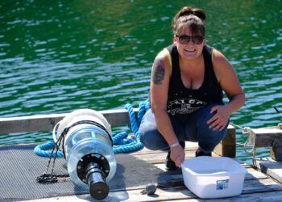
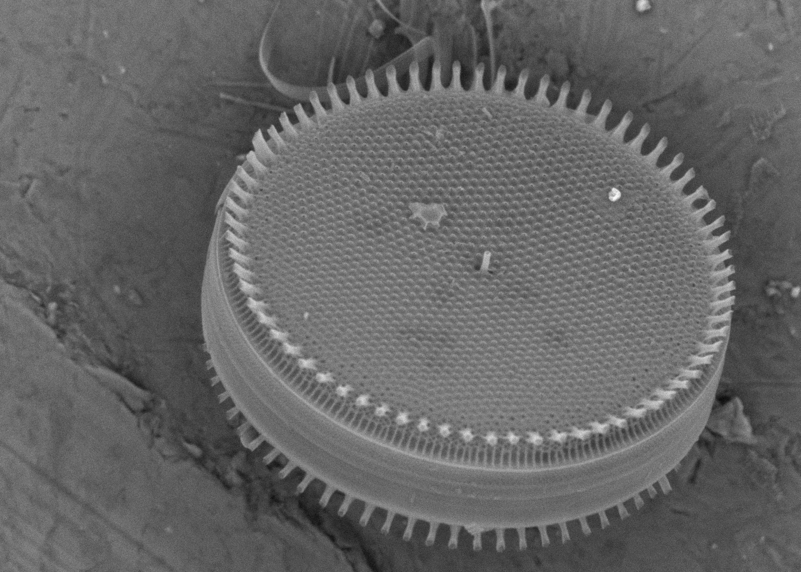
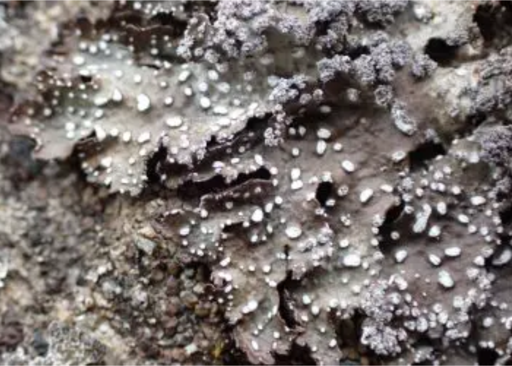
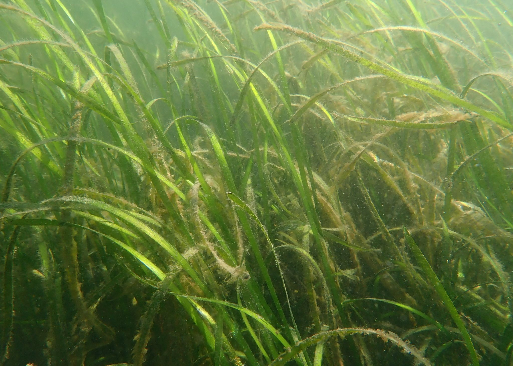
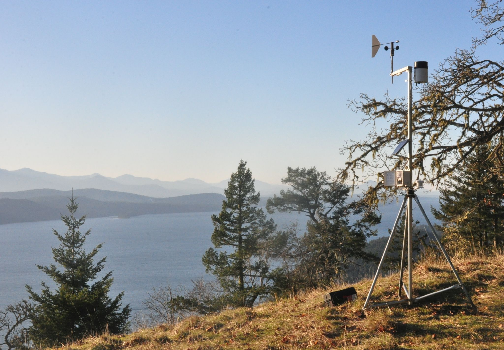
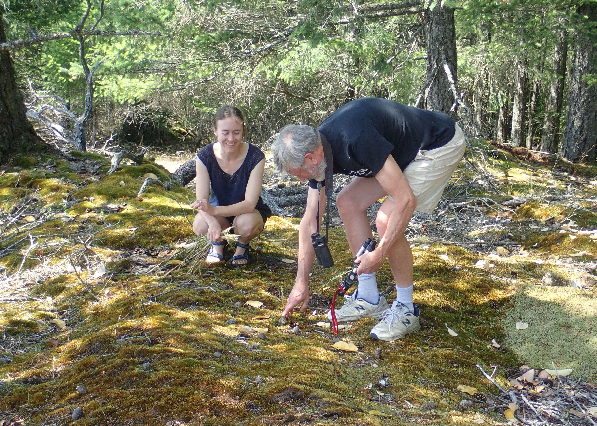
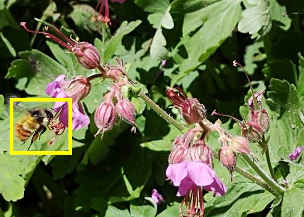
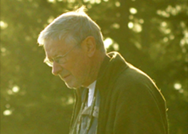
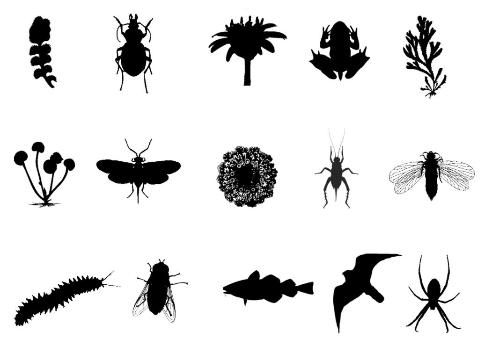

Research and Collaboration Themes
Eco-cultural Mapping
We can enrich our understanding of the Salish Sea bioregion by weaving Indigenous and Western scientific place-based knowledge. In this spirit, eco-cultural mapping pilot project Xetthecum integrates biodiversity data with Indigenous knowledge and stories into an interactive map that harnesses design, data visualization and artistic practice to deepen place-based learning. Xetthecum is providing a basis for the work of our partners Whiteswan Environmental in mapping sites of ancestral significance across the region.
Long-term Community Ecological Research
Communities have important roles to play in monitoring biodiversity in local places over the long term. This is the underpinning of long-term ecological research, and the inspiration behind the project Biogaliano, the seed from which IMERSS was formed. From Sentinels of Change dungeness crab monitoring, to our eelgrass and diatom community research, to marine lichens and local climate monitoring, we are fostering community-based efforts to better understand change in this bioregion. To connect communities involved in this work of long-term ecological research, we are partenered with the Hakai Insitute on the creation of a transboundary bioregional resource, the Community Atlas for the Salish Sea.







Living Data Science
Preserving the work of dedicated naturalists who have monitored the bioregion over decades allows us to inform historical baselines and overall biodiversity knowledge. This work feeds into our development of bioinformatics frameworks for ongoing tracking of biodiversity data from communities across the region.


Public Education
IMERSS strives to foster opportunities for learning within and across communities of practice. From opportunities for youth and others to learn about microscopy through Microscopic Explorations, to internships and artist collaborations, we aim to build community and deepen knowledge through interdisciplinary place-based learning.